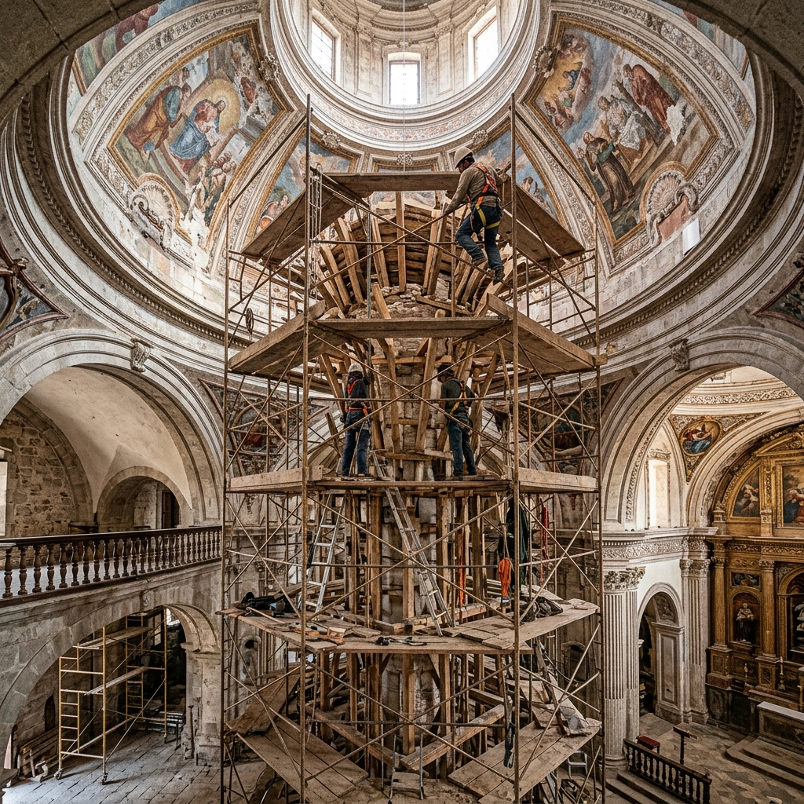
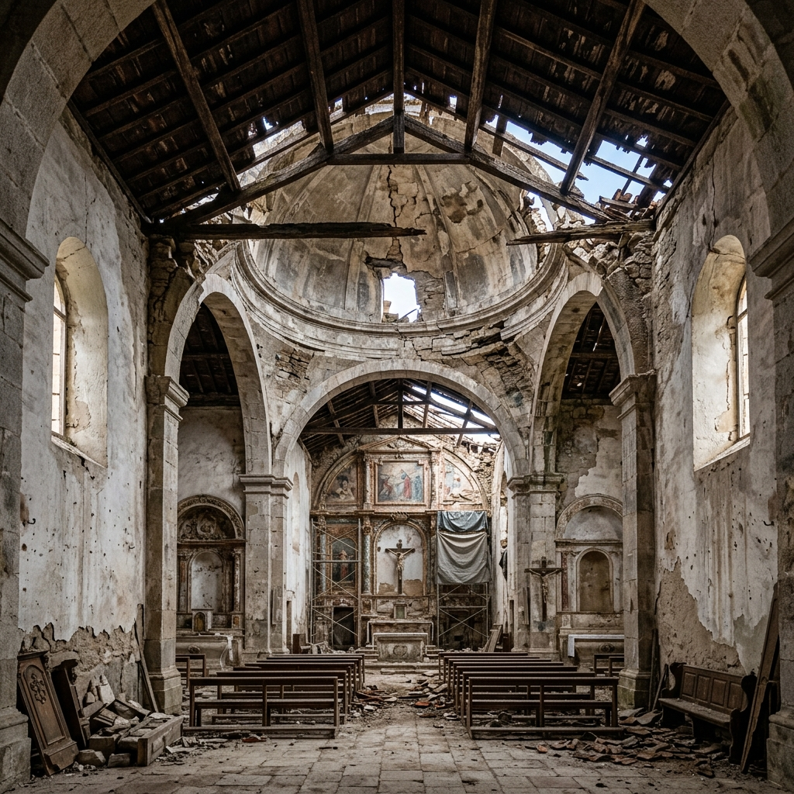

Parroquia
Santo Tomás Apóstol
"Porque donde están dos o tres congregados en mi nombre, allí estoy yo en medio de ellos." - Mateo 18:20
Conoce Nuestro Proyecto de ReconstrucciónHorario de Misas y Servicios
Te esperamos para celebrar juntos la Eucaristía.
Santas Misas
- Lunes No hay misa
- Martes a Sábado 7:00 AM y 5:00 PM
- Domingo (Mañana) 7:00 AM, 9:00 AM, 11:00 AM
- Domingo (Tarde/Noche) 4:00 PM y 7:00 PM
Servicios y Oficina
- Confesiones Sin horario establecido
- Hora Santa Jueves 8:00 AM - 12:00 PM
- Adoración Nocturna Jueves 7:00 PM
- Secretaría Lun. a Vie. 8:00 AM - 12:00 PM / 1:00 PM - 5:00 PM
Nuestra Comunidad
Historia y Misión
Ubicada en el corazón de Santo Tomás Milpas Altas, nuestra parroquia es el centro espiritual de la comunidad. Guiados por el ejemplo de Santo Tomás Apóstol, buscamos fortalecer nuestra fe mediante la oración, la fraternidad y el servicio al prójimo.
Somos una comunidad viva, llena de tradiciones y compromiso evangelizador, donde todas las familias encuentran su hogar espiritual.


Padre Christian González
Párroco
"Bienvenidos a su casa. Oramos juntos por nuestra comunidad."
.jpg)
Padre Romeo
Vicario Parroquial
"Llamados a servir y a caminar juntos en la fe como comunidad."
Proyecto de Reconstrucción
Techo y Construcción de la Nueva Cúpula
Nuestra histórica parroquia necesita tu ayuda. Los trabajos contemplan la reconstrucción del techo dañado y la creación e instalación de una nueva cúpula (de la cual carece actualmente) para embellecer y coronar nuestro templo.
Ayúdanos a llegar a la meta

¿Cómo puedes donar?
Puedes realizar tu aporte mediante transferencia o depósito bancario:
Cuenta Monetaria: 3710057595
Nombre: Comité Proconstrucción Santo Tomás Apóstol
Por favor, envía tu boleta o comprobante a nuestro WhatsApp para llevar un registro de tu valiosa ayuda.
Enviar Comprobante

.jpeg)
.jpeg)
.jpeg)
.jpeg)





(Haz clic en cualquier imagen para ampliarla)
Sacramentos
Acompañamos tu crecimiento espiritual en cada etapa.
Bautismo
Iniciación a la fe cristiana para niños y adultos.
Primera Comunión
Preparación y catequesis para recibir a Jesús.
Confirmación
Fortalecimiento del Espíritu Santo en los jóvenes.
Matrimonio
Unión sagrada. Contacta con secretaría para requisitos.
Requisitos para Sacramentos
Para iniciar el trámite de bautizo en Secretaría, debes presentar:
- Certificado de nacimiento del niño (original emitido por RENAP).
- Copia de DPI de ambos padres.
- Copia de DPI de los padrinos (deben ser católicos practicantes, confirmados y casados por la Iglesia si viven en pareja).
- Constancia de participación en pláticas pre-bautismales (para padres y padrinos).
Requisitos para inscribirse en la catequesis preparatoria:
- Haber cumplido 8 años de edad al iniciar el curso.
- Copia del certificado de nacimiento.
- Fe de bautismo original (indispensable para la inscripción).
- Participación y asistencia del estudiante a la catequesis semanal y a la misa de los domingos.
Requisitos para jóvenes que buscan el sacramento de la Confirmación:
- Tener al menos 13 años cumplidos.
- Haber recibido la Primera Comunión.
- Fe de bautismo original y copia reciente.
- Asistencia puntual y constante a las charlas de preparación de jóvenes.
- Copia del DPI y fe de confirmación del padrino o madrina.
Documentación requerida para formar el expediente matrimonial (presentar 3 meses antes):
- Fe de bautismo original y reciente (máximo 6 meses) de ambos novios.
- Constancia de Confirmación y de Primera Comunión de ambos.
- Copia del DPI de los contrayentes y de dos testigos principales.
- Certificado del curso prematrimonial obligatorio.
- Constancia de matrimonio civil (o acuerdo para realizarlo en conjunto).
Grupos y Comunidades
Participa activamente en la vida pastoral y comunitaria de nuestra parroquia.
Grupo de Oración Católico Luz Eterna
Espacio dedicado a la oración profunda, la alabanza y la reflexión comunitaria para avivar la llama de la fe en el Espíritu Santo.
Cursillos de Cristiandad
Movimiento eclesial enfocado en posibilitar la vivencia y la convivencia de lo fundamental cristiano en la vida cotidiana.
Grupo Parroquial "Somos uno en Jesús"
Comunidad de hermanos unidos para compartir, crecer espiritualmente, formarse y servir al prójimo en fraternidad.
Ministerio de Lectores
Servicio litúrgico encargado de proclamar la Palabra de Dios con reverencia y claridad en la Eucaristía.
Contacto y Ubicación
📍 Santo Tomás Milpas Altas, Sacatepéquez, Guatemala.
📞 Secretaría: +502 1234 5678
💬 WhatsApp (Donaciones): +502 3938 0017
📍 Cómo llegar (Google Maps) Visítanos en Facebook